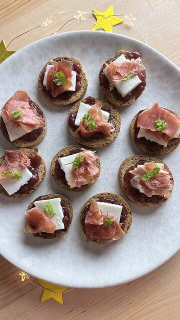

Rezept · Dessert · 10 Min. ca.
Süß-salziges Silvester-Röstbrot
„Süß-salziges Silvester-Röstbrot“ ist ein einfaches Rezept mit Low-Carb-Röstbrot, fertig in etwa 10 Minuten. Zutaten unter anderem: Zuckerfreie Erdbeer- oder Himbeerkonfitüre, Ziegenfrischkäse und Schinken – perfekt für einen Snack am Nachmittag oder ein Dessert. Low-Carb-Röstbrot liefert 44 g Protein pro 100 g.
5 Zutaten4 Schritte10 Min. ca.
 Zubereitet mitLow-Carb-Röstbrot125 gZum Produkt
Zubereitet mitLow-Carb-Röstbrot125 gZum ProduktZutaten
- Low-Carb-Röstbrot
- Zuckerfreie Erdbeer- oder Himbeerkonfitüre
- Ziegenfrischkäse
- Schinken
- Petersilie
Zubereitung
- 01Das Röstbrot auf einer Platte anrichten
- 02Konfitüre daraufgeben
- 03Mit Ziegenkäse und Schinken belegen
- 04Mit Petersilie garnieren